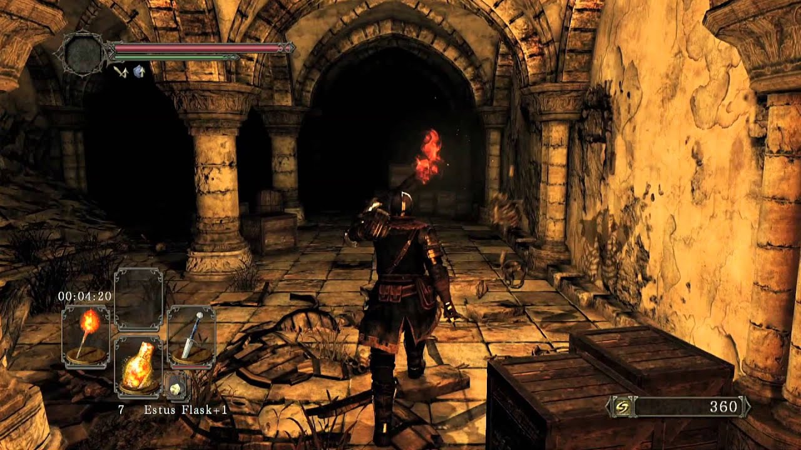
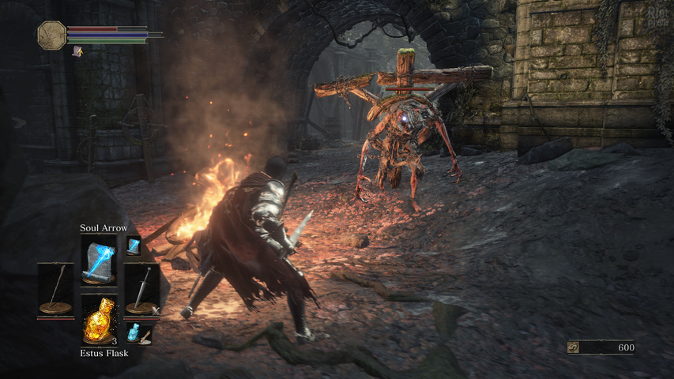

Dark souls

Начало этой самой линейке положила Dark Souls, вышедшая в 2011 году на PS3 и Xbox 360. Игра стала идейной наследницей Demon’s Souls: другой мир, другая история, но схожая геймплейная философия и, конечно же, ставшая визитной карточкой франшизы высокая сложность.
Dark Souls отправляла игроков в королевство Лордран, где им предстояло вжиться в роль живого мертвеца и отправиться в путешествие, полное опасностей, приключений и загадок. Игра позволяла создавать совершенно разные билды персонажей: заточенные на дальний или ближний бой, легкое или тяжелое оружие, использование или игнорирование магии, – и путем проб и ошибок покорять суровый мир, в котором даже самый захудалый враг мог отправить героя к ближайшему костру воскрешения.
В Demon’s Souls разработчики интегрировали любопытный сетевой режим: игроки могли оставлять сообщения другим игрокам, помогать им в прохождении или же вторгаться для PvP-сражений. Эта система получила немало положительных отзывов, и была перенесена в Dark Souls в полной мере, с незначительными улучшениями. Игроки даже обозначили некоторые игровые зоны как PvP-локации, что позволяло тестировать свои билды не на мобах, а на живых противниках.
Успех игры не мог сказаться на желании РС-геймеров получить ее на своей платформе. Игроки создали петицию (в те времена вообще модно было направлять разработчикам петиции о портировании консольных игр на ПК, но положительный исход с Dark Souls стал, скорее, исключением, нежели устоявшейся практикой), и японские игроделы выпустили компьютерную версию своей хардкорной RPG.
Порт получился плохим, нет – кошмарным, о чем FromSoftware честно предупреждала, ссылаясь на цейтнот и отсутствие опыта в работе с РС как платформой. Слабая графика, ограничение в 30 кадров в секунду, ужасное управление с клавиатуры и мыши – геймеры страдали, но терпели, желая приобщиться к игре. К счастью, на ПК есть мододелы, и уже в первые дни после выхода проекта стало возможным скачать фикс, исправлявший многие недостатки порта. Несмотря на все проблемы, компьютерная версия отлично продалась, поэтому анонс сиквела состоялся уже сразу для всех актуальных платформ.
Dark souls 2
Вторую часть фанаты ждали с нетерпением и опаской, ведь Хидетака Миядзаки почти не принимал участия в ее разработке, сосредоточившись на Bloodborne для PS4. Учитывая популярность оригинальной игры, издатель выделил больше денег на сиквел, но также предъявлял и больше требований к команде авторов. В общем, чтобы не рисковать, игроделы решили не изобретать колесо и сделать что-то похожее на первую часть, но с новым сюжетом (действие игры разворачивалось в той же вселенной, но в другом королевстве) и незначительными геймплейными изменениями.
В результате Dark Souls II получила, преимущественно, положительные оценки, но многие игроки раскритиковали ее за вторичность и отсутствие свежих идей. Кроме того, не всем по душе пришлись смена настроения игры с мрачного на более светлое и упрощения по части игрового процесса. К чести разработчиков, они прислушались к критике и выпустили издание Scholar of the First Sin, в котором повысили сложность, добавили новых NPC, врагов и боссов, оружие и снаряжение, а также расширили концовку сюжетной линии. Нельзя сказать, что это существенно сгладило впечатления от релизной версии, тем не менее некоторые ценители хардкорности были удовлетворены.
Dark souls 3
К последней игре серии Миядзаки вернулся, и сделал то, чего ждали поклонники – хорошую, сложную RPG, которая заставляла учиться на своих ошибках и чередой поражений и побед выгрызать у противников право на существование в депрессивном мире, роль которого снова исполнил Лордран – хоть и через много лет уже под новым названием. Внимательные игроки были рады находить отсылки к первой Dark Souls, а неофиты впечатлялись обволакивающей атмосферой безысходности.
Что касается геймплея, то здесь игра стала одновременно и проще, и сложнее. Серия находилась на пике популярности, ее название стало нарицательным, а запредельная сложность породила массу мемов, что неизбежно привлекло новую аудиторию, в том числе из стана так называемых «казуальных» геймеров.
И разработчики выполнили, казалось бы, непосильную задачу: сделали Dark Souls III более удобной, комфортной для новичков, но в то же время спрятали в мире испытания, способные доставить немало проблем даже прожженным хардкорщикам. Для тех, кому не хватило и этого, позже вышли дополнения, которые бросали игрокам серьезный вызов.